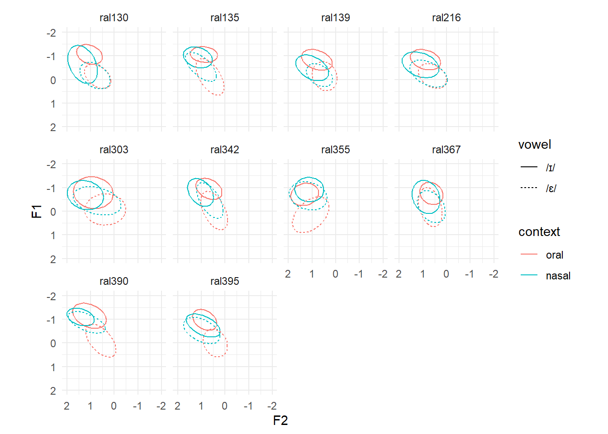
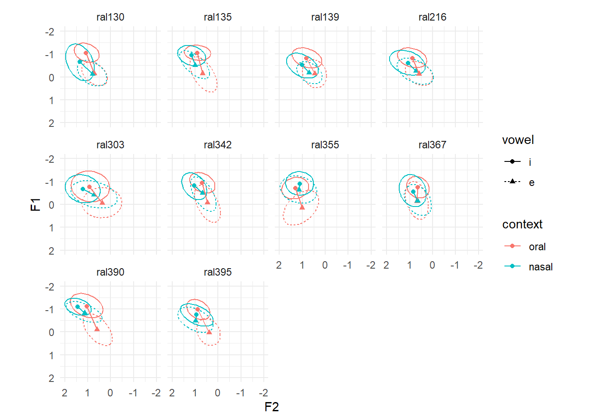
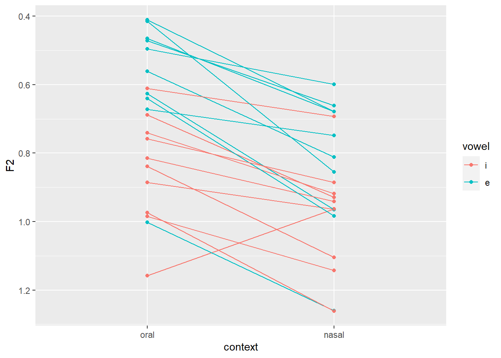
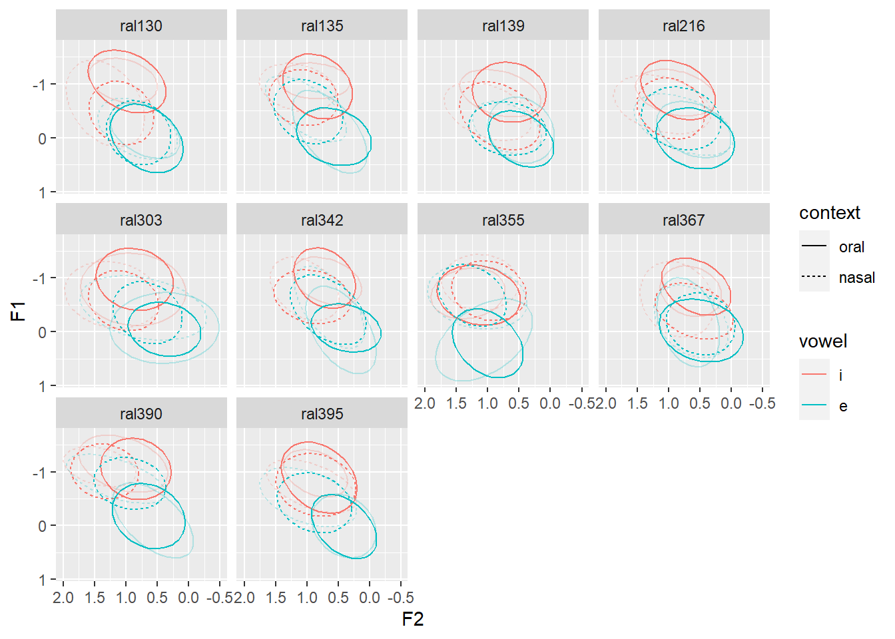

library(brms)
library(tidybayes)
library(adehabitatHR)
library(tidyverse)MMO Tutorial
Introduction
This tutorial is meant to accompany Smith, Sonderegger, and Spade Consortium (2024) (preprint), which describes a new method for calculating vowel merger: Modelled Multivariate Overlap (MMO). The application discussed in the paper and shown in this tutorial is the PIN-PEN merger (Labov, Ash, and Boberg 2006). We operationalize the degree of merger between two vowels as the amount of distributional overlap in F1 / F2 space between those two vowels. While the paper and the tutorial both focus on vowel merger, the method applies more generally to quantifying the overlap between distributions of any kind, including distributions in more than 2 dimensions1. Additionally, this method is flexible in that it can be applied for any measure of overlap that can be calculated from empirical distributions. Here, we show the method applied to calculate Bhattacharyya affinity and Euclidean distance, but it could also be used to calculate Pillai or scores any of the other methods described in Nycz and Hall-Lew (2014) or Kelley and Tucker (2020).
The steps for calculating MMO are outlined below. For more details, see Smith, Sonderegger, and Spade Consortium (2024). The steps are written for the PIN-PEN merger application that is carried throughout this tutorial, so “F1,” “F2,” “vowel,” and “context” might be different quantities in your specific application.
Preprocessing: Must include some form of normalization of F1 and F2 , so that overlap measures are comparable across speakers. After normalization, we discard all vowels except for the two that are interest here: /ɪ/ and /ɛ/. In addition to these two steps, you canx do whatever data cleaning or transformations you like, such as centering and scaling predictors, or eliminating problem tokens.
Modelling: Fit a multivariate model to jointly predict F1 and F2. Bayesian multivariate modelling is an extremely convenient way to implement MMO, because it directly models distributions. However, if you have another way to generate a modelled distribution, go for it. If fitting Bayesian models is intimidating for you, the code for fitting a model in
brmsthat is included here, along with basic knowledge oflmer-style model syntax, should be enough to get you fitting your own Bayesian models. The Interspeech2024 subfolder of this repository has examples of more complexbrmsmodels, specifically, with modelled variance and nested random effects structures.Simulation: Using the model that was fit in Step 2, simulate tokens of each vowel, varying or holding constant other variables as appropriate. For example, for the PIN-PEN merger,
context(prenasal or preoral) needs to be accounted for, so we simulate tokens for eachvowel-by-contextpair. Ifdurationandspeaker genderwere included as model predictors, then it might make sense to holddurationconstant (for example, at its average value across all tokens of all speakers) and to setspeaker genderto the appropriate value for each speaker. Simulations can be made either for each individual speaker, or for the “average” speaker. Below, we show how to make both of these kinds of simulations using thetidybayespackage.Overlap calculation: Now that you have simulated an empirical distribution, you can calculate any measure of overlap you like. This tutorial shows how to calculate Bhattacharyya affinity and Euclidean distance.
Finally, this tutorial is designed such that it can reasonably be run locally on a personal computer. The most resource-intensive step is fitting the Bayesian model: if this is too much for your computer, you should download the fitted model (where?) and put it in the same folder as this script: if the file is in the correct place, the brm line will read the file instead of fitting the model, and spare your computer in the process. If you do fit the model, it will be saved and then read-in instead of re-fit when you re-run the brm command.
It is very likely that, if you are fitting models on corpus data, you will need to use an external server or cluster to fit your models. Making model predictions and calculating Bhattacharyya affinity can also be very resource-intensive, so I would also recommend calculating those externally and saving the output. The Interspeech2024 folder has examples of scripts for doing this.
Packages
The following packages were used to carry out the core parts of the analysis:
brms(Bürkner 2018) is used to fit the Bayesian model. It usesRStan(Stan Development Team, n.d.), which needs to be manually installed. Instructions for installingRStancan be found here. OnceRStanis installed,brmscan simply be installed usinginstall.packages("brms")(more information here).tidybayes(Kay 2020) is used to get model predictions and to summarize model predictions.adehabitatHR(Calenge 2006) is the package used to compute Bhattacharyya affinity. The code below is adapted from Joey Stanley’s tutorial.tityverseis used forggplot2anddplyrfunctionality.
For visualizing results, we use the following libraries:
patchworkto help arrangeggplot2plotsshowtextnot sure yet, it was included in the ling methods hub templatekhromafor extra color palettes
library(patchwork)
# library(showtext)
library(khroma)
# # these commands affect the appearance of plots
# font_add_google("Atkinson Hyperlegible", "atkinson")
# showtext_auto()Data processing
We’ll be using the Raleigh corpus (Dodsworth and Benton 2020) from the SPADE project (Sonderegger et al. 2022), available on OSF. Download it and put the file in the data folder.
raleigh_data_full <- read.csv("data/spade-Raleigh_formants_whitelisted.csv")To make this tutorial run-able on a personal laptop, we’ll just use the ten speakers who have the most data.
# make a vector containing the names of the 10 speakers with the most data
top_10_speakers <- raleigh_data_full %>%
count(speaker) %>% # the number of tokens per speaker
mutate(rank=dense_rank(desc(n))) %>% # rank number of tokens with most=1
filter(rank <= 10) %>% # filter out everyone except the top 10 speakers
pull(speaker) # convert speaker column to a vector
# filter the original dataset to only include top 10 speakers
raleigh_data_top10 <- raleigh_data_full %>%
filter(speaker %in% top_10_speakers) Before narrowing down to the two vowels of interest (/ɪ/ and /ɛ/), we want to Lobanov normalize using all vowel tokens (Lobanov 1971), i.e., take a z-score of F1 and F2 across all vowel tokens.
raleigh_data_norm <- raleigh_data_top10 %>%
group_by(speaker) %>% # vowels are normalized separately for each speaker
mutate(across(c(F1, F2), ~ (.x - mean(.x, na.rm = TRUE)) / sd(.x)))Check to see that the vowels are reasonably z-scored:
raleigh_data_norm %>%
ggplot(aes(x=F2, y=F1, color=phone_label)) +
geom_point(alpha=0.25, show.legend=FALSE) +
facet_wrap(~speaker) +
scale_x_reverse() + scale_y_reverse() +
# scale_color_bright() +
theme_minimal() +
theme(text = element_text(family = "atkinson"))Warning in grid.Call(C_stringMetric, as.graphicsAnnot(x$label)): font family
not found in Windows font database
Warning in grid.Call(C_stringMetric, as.graphicsAnnot(x$label)): font family
not found in Windows font databaseWarning in grid.Call.graphics(C_text, as.graphicsAnnot(x$label), x$x, x$y, :
font family not found in Windows font databaseWarning in grid.Call(C_textBounds, as.graphicsAnnot(x$label), x$x, x$y, : font
family not found in Windows font databaseWarning in grid.Call.graphics(C_text, as.graphicsAnnot(x$label), x$x, x$y, :
font family not found in Windows font databaseNow, let’s narrow down the dataset to the tokens and quantities we’re interested in. We want stressed tokens of /ɪ/ and /ɛ/.
raleigh_data <- raleigh_data_norm %>%
# pick out just syllables with primary stress
filter(syllable_stress==1) %>%
# grab the /ɪ/ and /ɛ/ tokens.
# match the unisyn label to the phone label for a quality check
filter((phone_label=="EH1" & UnisynPrimStressedVowel1=="e") |
(phone_label=="IH1" & UnisynPrimStressedVowel1=="i")) %>%
# make sure that UR in this dialect corresponds to lexical set
# (more important when there is more than one dialect)
filter(unisynPrimStressedVowel2_sca==UnisynPrimStressedVowel1) %>%
# label the context according to following consonant
mutate(context = case_when(
following_phone %in% c("B", "CH", "D", "DH", "F", "G", "HH", "JH", "K",
"L", "P", "R", "S", "SH", "T", "TH", "V", "W",
"Y", "Z", "ZH" ) ~ "oral", # oral consonants
following_phone %in% c("N", "M", "NG") ~ "nasal", # nasal consonants
TRUE ~ "other")) %>%
# get rid of everything that isn't an oral or nasal consonant
filter(context != "other") %>%
# get rid of voiced prevalar contexts (can include, but would want
# following consonant included in model as a predictor or random effect)
filter(following_phone!="NG", following_phone!="G") %>%
# make vowel and context factors and make sure that there aren't
# extraneous levels
mutate(vowel = factor(UnisynPrimStressedVowel1,
levels=c('i', 'e')),
context = factor(context,
levels=c('oral', 'nasal'))) %>%
droplevels() %>%
# keep just the columns we're interested in
dplyr::select(speaker, vowel, context, word, F1, F2)There is currently too much data to fit the model on my computer, so want to randomly pick 50 tokens of each vowel-by-context pair for each speaker.
# set seed so that code is replicable
set.seed(22)
raleigh_data_50 <- raleigh_data %>%
group_by(speaker, context, vowel) %>%
slice_sample(n=50) %>%
ungroup()Exploratory plots
Let’s make some exploratory plots to set up our expectations.
First, let’s just start with looking at the vowel-by-context distributions in F1 / F2 space for each speaker.
raleigh_data %>%
ggplot(aes(x=F2, y=F1, color=vowel)) +
# geom_point(alpha=0.1, aes(shape=context)) +
stat_ellipse(level=0.66, aes(lty=context)) +
scale_color_manual(values=c('red', 'blue'),
labels=sprintf(c('\u026A', '\u025B'))) +
# c('/ɪ/', '/ɛ/')) +
scale_x_reverse() + scale_y_reverse() +
facet_wrap(~speaker)
Let’s look at each speaker’s category center on the same graph.
raleigh_data %>%
group_by(speaker, vowel, context) %>%
summarize(across(c(F1, F2), mean)) %>%
ungroup() %>%
ggplot(aes(x=F2, y=F1, color=vowel, shape=context)) +
geom_point() +
geom_line(aes(group=interaction(vowel, speaker))) +
scale_x_reverse() + scale_y_reverse() +
facet_wrap(~speaker)
The average (across speakers) effect of context on vowel for both F1 and F2.
raleigh_data %>%
# give all speakers equal weight
group_by(speaker, vowel, context) %>%
summarize(F1=mean(F1)) %>%
ungroup() %>%
# now average all speakers together
group_by(vowel, context) %>%
summarize(F1=mean(F1)) %>%
ungroup() %>%
ggplot(aes(x=context, y=F1, color=vowel)) +
geom_point() +
geom_line(aes(group=vowel))
Now make the same plot but with each individual speaker’s interactions
raleigh_data %>%
group_by(speaker, vowel, context) %>%
summarize(F1=mean(F1)) %>%
ungroup() %>%
ggplot(aes(x=context, y=F1, color=vowel)) +
geom_point() +
geom_line(aes(group=interaction(vowel, speaker)))
Model fitting
We are going to fit a simple multivariate Bayesian model (similar to the “minimal” model in our Interspeech paper (Smith, Sonderegger, and Spade Consortium 2024)). For more model syntax examples (including more complex concepts, such as nested random effects and modelling variance), see the model-fitting scripts in the Interspeech folder of the github repository.
The model we are fitting jointly models F1 and F2, which is a key feature of the method we’re proposing. The remainder of the model structure is quite simple. The fixed predictors are context, vowel, log duration, and all interactions. There are by-word and by-speaker random intercepts, and by-speaker random slopes of of vowel, context, and their interaction.
F1 = bf(F1 ~
context*vowel +
(1|p|word) + (1+context*vowel|q|speaker))
F2 = bf(F2 ~
context*vowel +
(1|p|word) + (1+context*vowel|q|speaker))
model <- brm(F1 + F2 +
# set_rescor(TRUE) means that correlations between F1 & F2
# will be modelled.
set_rescor(TRUE),
# we want to use the smaller dataset so it doesn't take
# forever to fit
data=raleigh_data_50,
# if this file exists, this call will just read in the file.
# Otherwise, the call will save the model here.
file="tutorial_model",
# Set prior for correlations. All other parameters just use
# default priors.
prior = c(prior(lkj(1.5), class = cor)),
# my computer has 8 cores, so I'm using 4 here, change
# according to your own machine. Ideally, you want to use the
# same number of cores as chains, so that all the chains can
# run in parallel.
chains=4, cores=4,
# If there are warnings, consider increasing the number of
# iterations.
iter = 4000)Warning: There were 2 divergent transitions after warmup. See
https://mc-stan.org/misc/warnings.html#divergent-transitions-after-warmup
to find out why this is a problem and how to eliminate them.Warning: Examine the pairs() plot to diagnose sampling problemsprior_summary(model) prior class coef group resp dpar nlpar
(flat) b F1
(flat) b contextnasal F1
(flat) b contextnasal:vowele F1
(flat) b vowele F1
(flat) b F2
(flat) b contextnasal F2
(flat) b contextnasal:vowele F2
(flat) b vowele F2
student_t(3, -0.6, 2.5) Intercept F1
student_t(3, 0.8, 2.5) Intercept F2
lkj_corr_cholesky(1.5) L
lkj_corr_cholesky(1.5) L speaker
lkj_corr_cholesky(1.5) L word
lkj_corr_cholesky(1) Lrescor
student_t(3, 0, 2.5) sd F1
student_t(3, 0, 2.5) sd F2
student_t(3, 0, 2.5) sd speaker F1
student_t(3, 0, 2.5) sd contextnasal speaker F1
student_t(3, 0, 2.5) sd contextnasal:vowele speaker F1
student_t(3, 0, 2.5) sd Intercept speaker F1
student_t(3, 0, 2.5) sd vowele speaker F1
student_t(3, 0, 2.5) sd speaker F2
student_t(3, 0, 2.5) sd contextnasal speaker F2
student_t(3, 0, 2.5) sd contextnasal:vowele speaker F2
student_t(3, 0, 2.5) sd Intercept speaker F2
student_t(3, 0, 2.5) sd vowele speaker F2
student_t(3, 0, 2.5) sd word F1
student_t(3, 0, 2.5) sd Intercept word F1
student_t(3, 0, 2.5) sd word F2
student_t(3, 0, 2.5) sd Intercept word F2
student_t(3, 0, 2.5) sigma F1
student_t(3, 0, 2.5) sigma F2
lb ub source
default
(vectorized)
(vectorized)
(vectorized)
default
(vectorized)
(vectorized)
(vectorized)
default
default
user
(vectorized)
(vectorized)
default
0 default
0 default
0 (vectorized)
0 (vectorized)
0 (vectorized)
0 (vectorized)
0 (vectorized)
0 (vectorized)
0 (vectorized)
0 (vectorized)
0 (vectorized)
0 (vectorized)
0 (vectorized)
0 (vectorized)
0 (vectorized)
0 (vectorized)
0 default
0 defaultTo make predictions, we need to know what parameter values to predict for. If we want to make predictions for an “average speaker,” we want to ignore the random effects structure entirely, i.e., predict F1 and F2 as a function of just vowel and context.
Let’s make a dataframe with every combination of vowel and context:
nd1 <- expand_grid(context = levels(model$data$context),
vowel = levels(model$data$vowel))If we want to make
nd2 <- expand_grid(context = levels(model$data$context),
vowel = levels(model$data$vowel),
speaker = unique(model$data$speaker))
num_draws=100
num_points=25fitted_sp_int <- nd2 %>%
add_epred_draws(model,
re_formula = ~(1+context*vowel|
q|speaker),
ndraws=num_draws) %>%
ungroup() %>%
pivot_wider(names_from=".category", values_from=".epred")We also want to make predictions for the average speaker, i.e., from the model but ignoring the entire random effects structure:
fitted_av_int <- nd1 %>%
add_epred_draws(model,
re_formula=NA, # needs to be NA (which keeps it empty), rather than NULL, which is the "default," i.e., complete random effects structure
ndraws=num_draws) %>%
ungroup() %>%
pivot_wider(names_from=".category", values_from=".epred")predicted_sp_int <- nd2 %>%
add_predicted_draws(model,
re_formula = ~(1+context*vowel|
q|speaker),
ndraws=num_draws) %>%
ungroup() %>%
pivot_wider(names_from=".category", values_from=".prediction")predicted_av_int <- nd1 %>%
add_predicted_draws(model,
re_formula=NA,
ndraws=num_draws) %>%
ungroup() %>%
pivot_wider(names_from=".category", values_from=".prediction")We need to make special dataframes for the BA calculations because we want to be able to calculate uncertainty. First, let’s define a function for repeating a dataframe df n_rep times. We don’t need to do this, but it makes the code for getting the predicted dataframes cleaner.
rep_df <- function(df, n_reps)
{
df_repeated <- do.call("rbind", replicate(n_reps, df, simplify = FALSE))
}Because we only need these special repeated dataframes to calculate BA (which requires a distribution to compute), we just need to generate posterior predictions, not the fitted means. What we’re doing here is getting n_draws (i.e., 25) predictions for each draw, i.e, we assume a fixed set of parameter values and then get 25 values from the posterior predicted distribution assuming those values. We do this n_draws times, which which in the end will give us a distribution of possible BA values.
predicted_sp_BA <- nd2 %>%
rep_df(num_points) %>%
add_predicted_draws(model,
re_formula = ~(1+context*vowel|
q|speaker),
ndraws=num_draws) %>%
ungroup() %>%
pivot_wider(names_from=".category", values_from=".prediction")predicted_av_BA <- nd1 %>%
rep_df(num_points) %>%
add_predicted_draws(model,
re_formula=NA,
ndraws=num_draws) %>%
ungroup() %>%
pivot_wider(names_from=".category", values_from=".prediction")sp_estimates <- fitted_sp_int %>%
group_by(speaker, vowel, context) %>%
mean_qi() %>%
ungroup()p_F1_interaction_modelled <- sp_estimates %>%
ggplot(aes(x=context, y=F1, color=vowel)) +
geom_point() +
geom_line(aes(group=interaction(vowel, speaker)))
p_F1_interaction_empirical <- raleigh_data %>%
group_by(speaker, vowel, context) %>%
summarize(F1=mean(F1)) %>%
ungroup() %>%
ggplot(aes(x=context, y=F1, color=vowel)) +
geom_point() +
geom_line(aes(group=interaction(vowel, speaker)))
p_F1_interaction_modelled + p_F1_interaction_empirical
sp_estimates %>%
ggplot(aes(x=context, y=F2, color=vowel)) +
geom_point() +
geom_line(aes(group=interaction(vowel, speaker)))
raleigh_data %>%
group_by(speaker, vowel, context) %>%
summarize(F2=mean(F2)) %>%
ungroup() %>%
ggplot(aes(x=context, y=F2, color=vowel)) +
geom_point() +
geom_line(aes(group=interaction(vowel, speaker)))sp_estimates %>%
ggplot(aes(x=F2, y=F1, color=vowel, shape=context)) +
geom_point() +
stat_ellipse(data=fitted_sp_int,
aes(group=interaction(speaker, vowel, context), lty=context),
level=0.66, alpha=0.25) +
geom_line(aes(group=interaction(vowel, speaker))) +
scale_x_reverse() + scale_y_reverse()
raleigh_data %>%
group_by(speaker, vowel, context) %>%
summarize(across(c(F1, F2), mean)) %>%
ungroup() %>%
ggplot(aes(x=F2, y=F1, color=vowel, shape=context)) +
geom_point() +
geom_line(aes(group=interaction(vowel, speaker))) +
scale_x_reverse() + scale_y_reverse()predicted_sp_int %>%
ggplot(aes(x=F2, y=F1, color=vowel, lty=context)) +
stat_ellipse(level=0.66) +
stat_ellipse(data=raleigh_data, level=0.66, alpha=0.25) +
facet_wrap(~speaker)
Overlap calculations
Now that we have predicted and fitted dataframes that “look like” the raw data, we can calculate any measure of overlap we like.
Let’s define a function to calculate Bhattacharyya affinity. For further explanation, see Joey Stanley’s thorough tutorial.
bhatt <- function (F1, F2, vowel)
{
vowel_data <- droplevels(data.frame(vowel))
sp_df <- tryCatch(
expr=SpatialPointsDataFrame(na.omit(cbind(F1, F2)), vowel_data),
error=function(e){NA})
tryCatch(
expr = {kerneloverlap(sp_df, method='BA')[1,2]},
error = function(e){NA})
}First, let’s calculate BA from the empirical distributions:
BA_raw_sp <- raleigh_data %>%
group_by(speaker, context) %>% # calcualte for each speaker and context
summarise(bhatt_aff = bhatt(F1, F2, vowel)) %>%
ungroup()BA_mod_sp <- predicted_sp_BA %>%
group_by(speaker, context, .draw) %>% # calculate for each speaker, context, AND draw
summarise(bhatt_aff = bhatt(F1, F2, vowel)) %>%
ungroup()BA_mod_av <- predicted_av_BA %>%
group_by(context, .draw) %>% # calculate for each context draw
summarise(bhatt_aff = bhatt(F1, F2, vowel)) %>%
ungroup()For calculating Euclidean distance, we need to take a slightly different approach for the empirical distributions than for the modelled distributions. Let’s do the empirical distributions first:
ED_raw_sp <- raleigh_data %>%
group_by(speaker, context, vowel) %>%
# first, find the average for speaker, context, vowel pair
summarise(F1=mean(F1),
F2=mean(F2)) %>%
ungroup() %>%
# reshape the dataframe so that "i" and "e" are in separate columns
pivot_wider(names_from="vowel", values_from=c("F1", "F2")) %>%
# now apply the pythagorean theorem, which defines Euclidean distance
mutate(eucl_dist = sqrt((F1_i - F1_e)^2 + (F2_i - F2_e)^2))ED_mod_sp <- fitted_sp_int %>%
dplyr::select(-.row, -.chain, -.iteration) %>%
# reshape the dataframe so that "i" and "e" are in separate columns
pivot_wider(names_from="vowel", values_from=c("F1", "F2")) %>%
# now apply the pythagorean theorem, which defines Euclidean distance
mutate(eucl_dist = sqrt((F1_i - F1_e)^2 + (F2_i - F2_e)^2))ED_mod_av <- fitted_av_int %>%
dplyr::select(-.row, -.chain, -.iteration) %>%
# reshape the dataframe so that "i" and "e" are in separate columns
pivot_wider(names_from="vowel", values_from=c("F1", "F2")) %>%
# now apply the pythagorean theorem, which defines Euclidean distance
mutate(eucl_dist = sqrt((F1_i - F1_e)^2 + (F2_i - F2_e)^2))References
Bürkner, Paul-Christian. 2018. “Advanced Bayesian Multilevel Modeling with the R Package Brms.” The R Journal 10 (1): 395–411. https://doi.org/10.32614/RJ-2018-017.
Calenge, Clement. 2006. “The Package Adehabitat for the R Software: A Tool for the Analysis of Space and Habitat Use by Animals.” Ecological Modelling 197: 1035.
Dodsworth, Robin, and Richard A. Benton. 2020. Language Variation and Change in Social Networks: A Bipartite Approach. Routledge.
Kay, Matthew. 2020. “Tidybayes: Tidy Data and Geoms for Bayesian Models.” R Package Version 2 (1): 1.
Kelley, Matthew C., and Benjamin V. Tucker. 2020. “A Comparison of Four Vowel Overlap Measures.” The Journal of the Acoustical Society of America 147 (1): 137–45. https://doi.org/10.1121/10.0000494.
Labov, William, Sharon Ash, and Charles Boberg. 2006. The Atlas of North American English: Phonetics, Phonology and Sound Change. De Gruyter Mouton. https://doi.org/10.1515/9783110167467.
Lobanov, Boris. 1971. “Classification of Russian Vowels Spoken by Different Speakers.” Journal of the Acoustical Society of America 49 (2B): 606–8. https://pubs.aip.org/asa/jasa/article-abstract/49/2B/606/747097/Classification-of-Russian-Vowels-Spoken-by.
Nycz, Jennifer, and Lauren Hall-Lew. 2014. “Best Practices in Measuring Vowel Merger.” Proceedings of Meetings on Acoustics 20 (1): 060008. https://doi.org/10.1121/1.4894063.
Smith, Irene, Morgan Sonderegger, and The Spade Consortium. 2024. “Modelled Multivariate Overlap: A Method for Measuring Vowel Merger.” In Interspeech 2024, 1–4. ISCA.
Sonderegger, Morgan, Jane Stuart-Smith, Michael McAuliffe, Rachel Macdonald, and Tyler Kendall. 2022. “Managing Data for Integrated Speech Corpus Analysis in \Textit{SPeech Across Dialects of English} (SPADE).” In The Open Handbook of Linguistic Data Management, edited by Andrea L. Berez-Kroeker, Bradley McDonnell, Eve Koller, and Lauren B. Collister, 195–207.
Stan Development Team. n.d. “RStan: The R Interface to Stan.” https://mc-stan.org/.
Footnotes
The ability to implement an overlap measure in more than 2 dimensions may vary from one measure to the next. For example, the R implementation of Bhattacharyya affinity in
adehabitatHRonly allows for 2-dimensional distributions, but Bhattacharyya affinity is theoretically defined for an arbitrary number of dimensions.↩︎